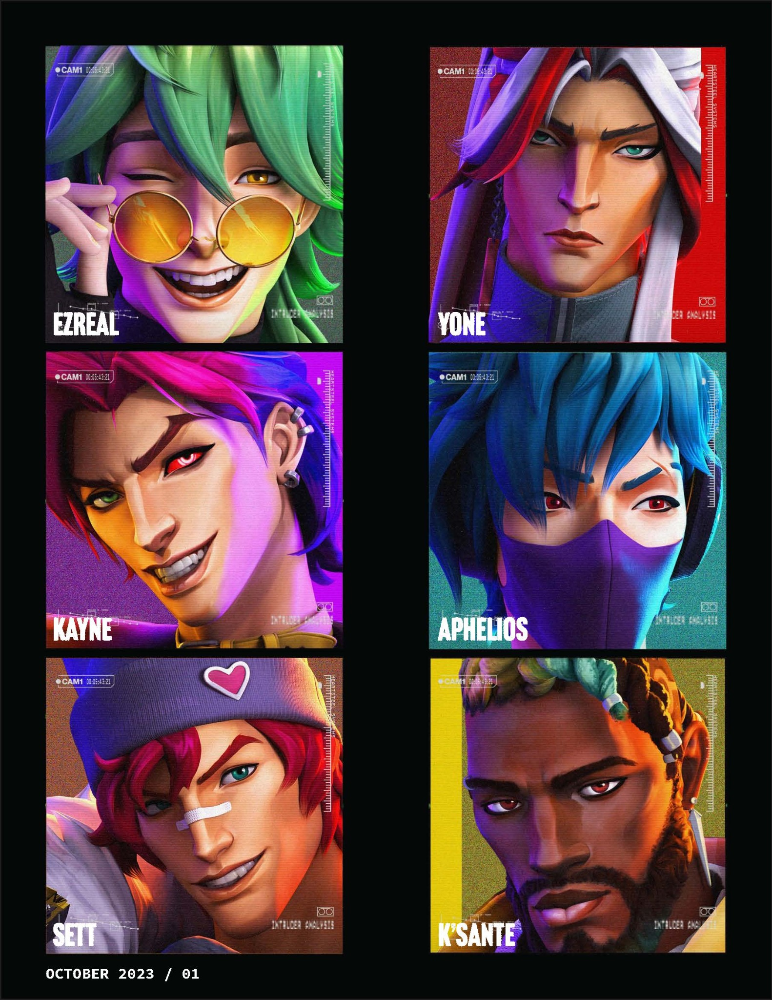

01 / Individual academic project
P&G Healthcare Growth Strategy
An individual class project on how P&G could grow over five years.
Explore the presentationVisual communication
I’ve made presentations, flyers, posters, and print materials for class projects and my sorority. Here are a few examples, along with the artwork I prepared during my internship.
01 / Individual academic project
An individual class project on how P&G could grow over five years.
Explore the presentation

02 / Chapter communications
Flyers, recruitment materials, button artwork, and a chapter recap I made as a volunteer.
See the collection
03 / NYC advocacy poster
A poster about upzoning and housing in New York City.
View the poster

04 / Editorial layout exercise
A layout exercise recreating the style of SHARP’s K/DA magazine for HEARTSTEEL.
Browse the layout study